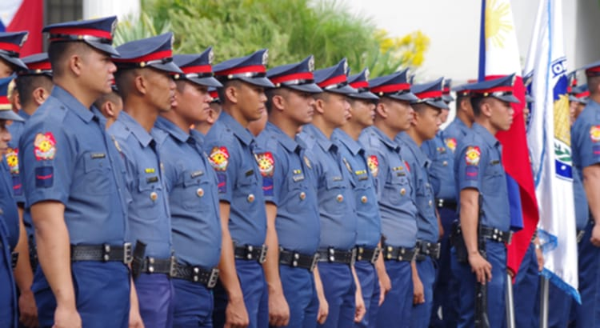
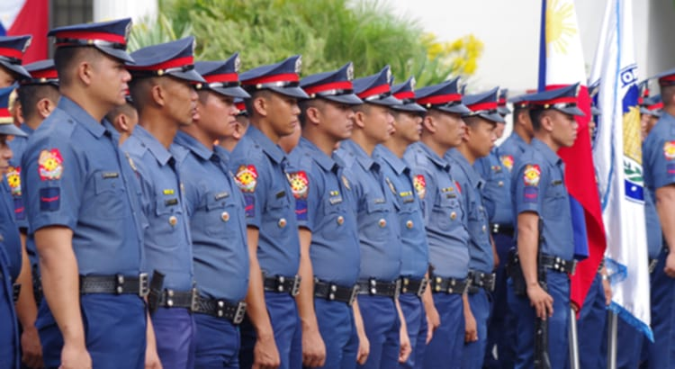

biography about me
I am Nishihiro Chesler Suller and I am currently 14 years old,and I was born on december 31,2009, I am from pampanga,gagalangin tondo manila and I am currently studying at LakanDula HighSchool.My mother is Rannesa Mae R.Suller and i don't know who is my father i have also family member they are Raniel Suller he is my grandfather and my grandmother is Dolores requeron and my guardian/unty Joana Roseann R. Suller and my other uncle.my happiness is playing basketball,listening music,i have a lot of money, and seeing my improvements of basketball. Each of these hobbies is makes me feel alive and fulfilled
For me, the most impressive things that happen in my life was when I graduate in elementary school, and my mother is happy and celebrate with me in my favorite restaurant jollibee, during that time I'm still remember that she was very happy for me. Because of that event My mother made me realised and inspired that I had to improve my education.
Life has thrown its fair share of challenges my way, and these experience have shaped and lesson to me. One particularly difficult moment was when my cellphone is lost while I'm sleep, in that situation I feel so bad because my cellphone is the most important in my life and it is very helpfull to my daily life and my to academic, it is happen when i was sleep and I don't know who is going to take my cellphone, my family don't know where it is, but each experience has tought me valuable lesson. I have learned the importance of time management,preservance, responsible, stay positive even our experience is difficult, and staying true to myself
I am grateful for the support of my family, teachers, freinds, and the god who has been with me every step of my way. Looking ahead, I am determine to my plan for my future, I want to be a successful career, whether as a policeman or a great bussinessman, and the one of my dreams for my future that i will be famous basketball player this is all my plan that help me to be rich for future, In that case I can take care my family and my mother, and i will be buy what i want.
My life motto is Forget the past,focus on the present, prepare for the grate future" this motto give me motivate everyday to focus in my difficult task and many challenges.

 
